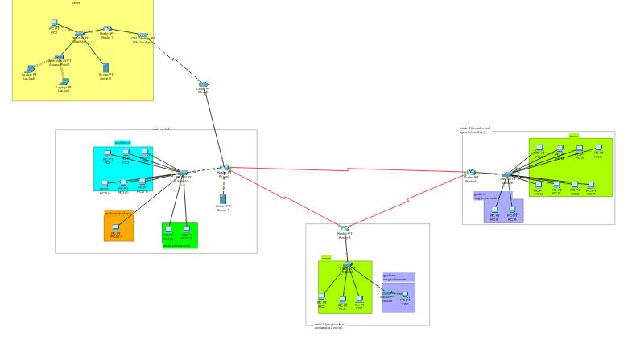
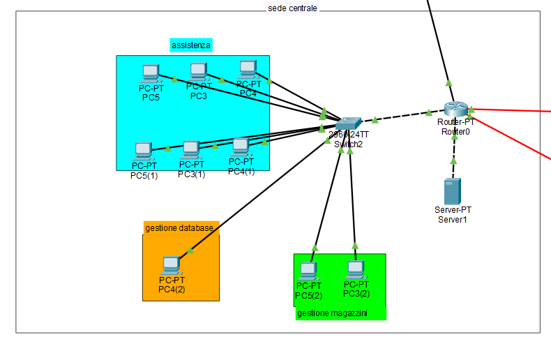
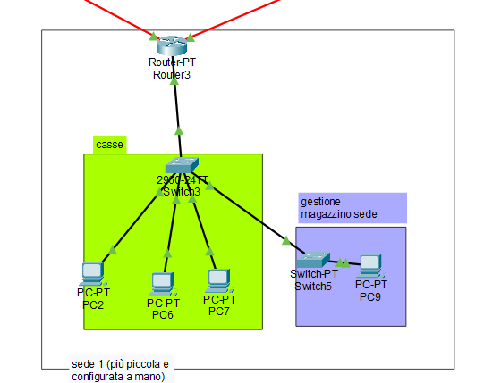
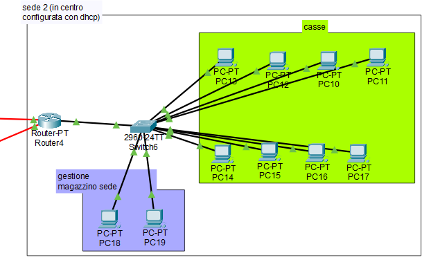
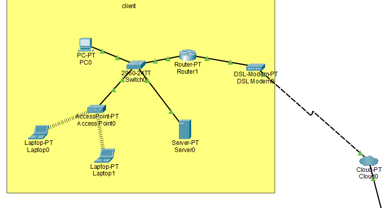
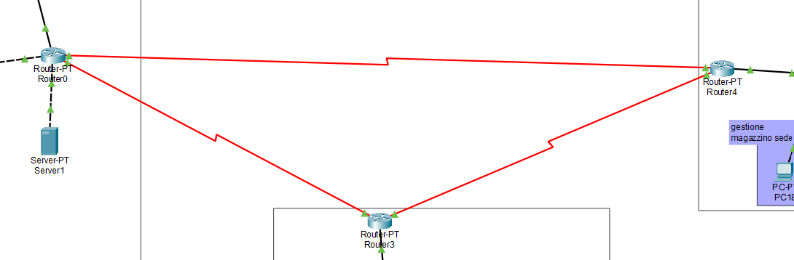

Benvenuto nel mio Progetto: catena di negozi

Descrizione
il mio progetto rappresenta una catena di negozi interconnessi tra di loro.
vi sono 3 sedi, una è la sede principale che ha il compito di gestire il sito del negozio dove la gente
può acquistare i prodotti, le altre due sedi sono i negozi fisici che vendono i prodotti.
una sede è più piccola ed è configurata a mano mentre le due sedi più grandi sono configurate
tramite DHCP.
il server offre i seguenti servizi: HTTP/HTTPS, DNS e DHCP.
Inoltre si puo avere un'esepio di come la sede centrale si interfacccia con un eventuale cliente.
qui di seguito troverete delle tabelle con la lista degli indirizzi IP utilizzati.
sede centrale

| dispositivi |
indirizzi |
| rete |
192.168.1.0 |
| default gateway |
192.168.1.254 |
| server DNS |
8.8.8.8 |
| rete Vlan assistenza |
192.168.10.0 |
| gateway assistenza |
192.168.10.254 |
| rete Vlan magazzini |
192.168.20.0 |
| gateway magazzini |
192.168.20.254 |
| rete Vlan gestione database |
192.168.30.0 |
| gateway gestione database |
192.168.30.254 |
sede 1

| dispositivi |
indirizzi |
| rete |
192.168.3.0 |
| default gateway |
192.168.3.254 |
| server DNS |
8.8.8.8 |
sede 2

| dispositivi |
indirizzi |
| rete |
192.168.4.0 |
| default gateway |
192.168.4.254 |
| server DNS |
8.8.8.8 |
| rete Vlan casse |
192.168.50.0 |
| gateway assistenza |
192.168.50.254 |
| rete Vlan magazzini |
192.168.51.0 |
| gateway magazzini |
192.168.51.254 |
client

| dispositivi |
indirizzi |
| rete |
192.168.0.0 |
| default gateway |
192.168.0.254 |
| server DNS |
8.8.8.8 |
routing tra le sedi

| dispositivi |
indirizzi |
| router 0/4 |
20.8.0.0 |
| router 0/3 |
10.8.0.0 |
| router 4/3 |
30.8.0.0 |
torna alla home